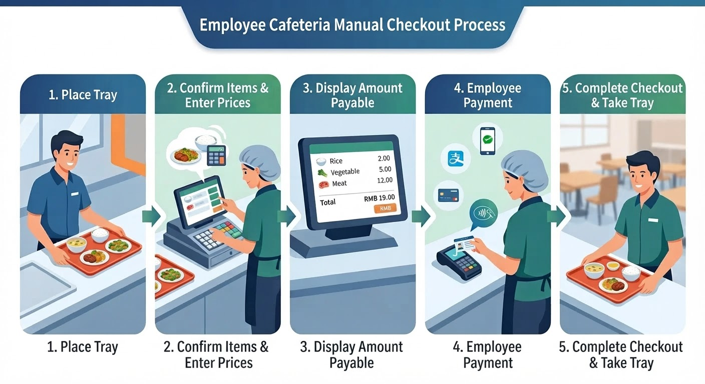
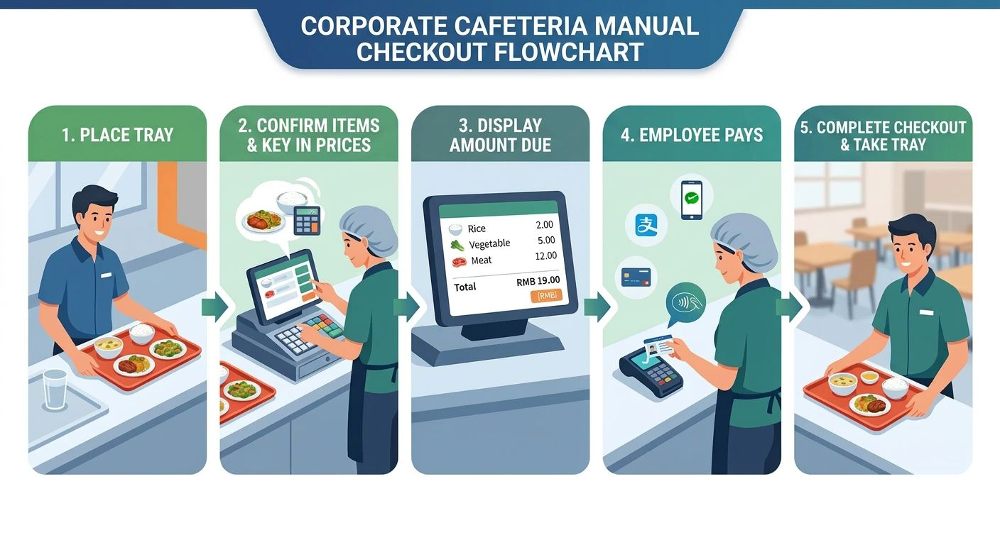
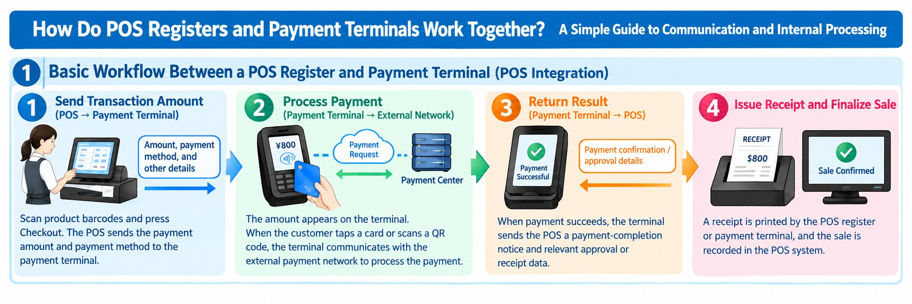
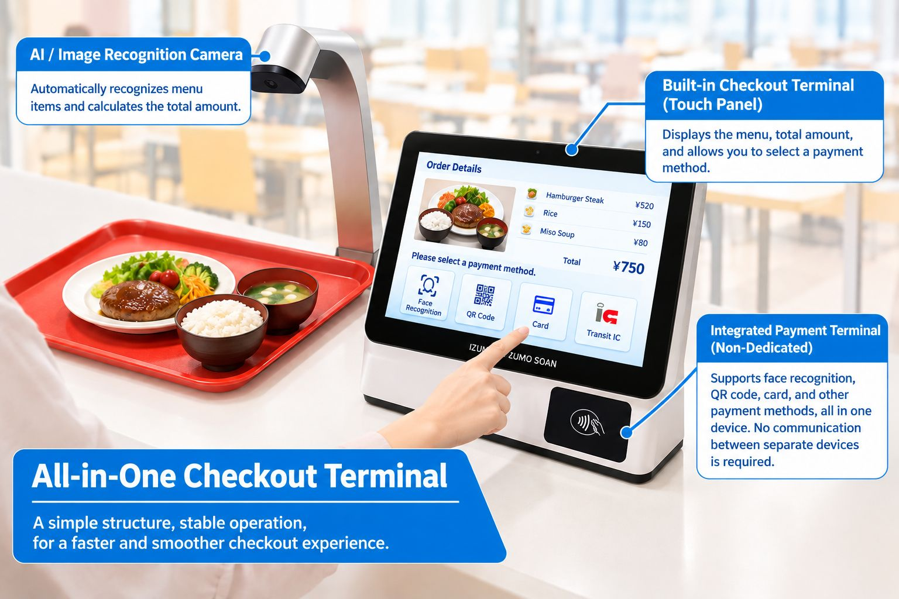

What you will learn in this article
- The checkout flow and differences among manned registers, standard auto-registers, and register-payment integrated auto-registers
- The often-overlooked "inter-device communication and system integration" challenges of standard auto-registers
- Design thinking that helps keep checkout running during network outages
- Options for reducing the payment-fee burden (prepaid, in-house accounts, payroll deduction)
In company and university cafeterias, users crowd in during lunchtime, and register wait times can grow long. An auto-register automatically calculates the price of the dishes, streamlining checkout and shortening the user's wait.
However, the performance of an auto-register is not determined by dish-recognition speed alone. How the register and payment terminals are linked, how network outages are handled, and payment fees all have a major impact on cafeteria operation.
This article compares the mechanisms of manned registers, standard auto-registers, and the register-payment integrated auto-register we provide, and explains the characteristics of each.
1. How a Manned Register Works
Key point: A manned register is a method where a cashier visually checks the dishes, enters the amounts, and processes payment on a payment terminal. It is reliable, but during the lunch peak, register queues and input errors tend to occur.
At a manned register, the cashier checks the dishes, enters the amounts, and completes the checkout.

Checkout Flow
- The user places the tray with their dishes on the register counter.
- The cashier checks the types of dishes and enters each price into the POS register.
- The total appears on the POS screen. The cashier confirms the payment method with the user and, if necessary, enters the amount into the payment terminal.
- The user pays with a card, QR code, or similar method.
- Once checkout is complete, the user takes the tray and moves to a seat.
Because a person checks the dishes and enters the amounts in this method, register queues tend to form during busy periods. Input errors and the cashier's workload are also challenges.
2. How a Standard Auto-Register Works
Key point: A standard auto-register automatically identifies dishes with RFID or AI image recognition to calculate the amount, with the register POS, linking PC, and payment terminal communicating with one another to complete checkout. Recognition is fast, but the number of inter-device and external-server links grows, creating a risk that checkout stops during a network outage.
A standard auto-register uses technologies such as RFID or AI image recognition to automatically calculate the types and prices of dishes.

Checkout Flow
- The user places the tray with their dishes on the register counter.
- RFID or AI image recognition identifies the dishes and calculates the total based on registered prices. Some systems can calculate the amount in about one second when recognition conditions are met.
- The total appears on the register POS screen. The register-side system sends this transaction data to a separate PC and links the amount and order information needed for payment processing.
- The user selects a payment method such as a card or QR code. The amount information is sent from the PC to the payment terminal, which communicates with the payment company's server to process the payment. The result is returned from the payment terminal to the PC, and the order data's payment status is updated.
- Once payment is complete, the user takes the tray and moves to a seat.
An Often-Overlooked Challenge: Inter-Device Communication and System Integration
A standard auto-register may have a configuration where multiple devices and systems work together, such as the dish-recognition unit, register POS, linking PC, and payment terminal.

In this configuration, it is important that communication between the devices and with external servers works correctly.

The way the POS register and payment terminal work together becomes easier to understand once you grasp these three points.
- The POS register calculates the transaction amount and sends the necessary information to the payment terminal.
- The payment terminal communicates with the payment service and receives the payment approval result.
- Returning the payment result to the POS register links the checkout with the sales record.
For example, if a fault occurs in sending order data from the register to the PC, or in linking the amount from the PC to the payment terminal, checkout may stop or confirming the payment result may take time.
Also, even when the payment itself succeeds, if the result is not correctly reflected on the register side, additional work such as reconciliation with sales data and checking for double payments may be required.
In fact, at one cafeteria, communication failures caused situations twice in the past where checkout could not be completed properly, and the operator had to cover the amounts that could not be settled.
Cases like these show that for cafeteria auto-registers, not only processing speed but also continued operation and recovery methods when a communication failure occurs are important.
3. How Our Auto-Register Works: Integrating the Register and Payment Terminals
Key point: Our auto-register integrates the register and payment functions into a single terminal, a configuration that removes the amount linking between the PC and payment terminal. This simplifies the configuration and makes it easier to keep checking out during network outages and to optimize payment costs.
Our auto-register adopts a configuration that integrates the register and payment functions into the same terminal.

All of our RFID and AI products are designed with the POS register and payment terminal integrated.
By removing the amount linking between the register-side PC and a separate payment terminal that a standard configuration requires, we simplify the system configuration and aim to improve stability.

Checkout Flow
- The user places the tray with their dishes on the register counter.
- RFID or AI image recognition identifies the dishes and automatically calculates the total. When recognition conditions are met, the amount can be calculated in about one second.
- The total appears on the register POS screen, and the user selects a payment method.
- The user pays using a method supported by the system, such as face recognition, QR code, or card. Because register and payment processing run within the same terminal, there is no need to link amount information between a separate PC and payment terminal. Order data and payment results are recorded within the terminal and sent to the server. Even if communication with the server is temporarily interrupted, the data to be sent can be retained on the terminal and automatically sent once communication recovers.
- Once checkout is complete, the user takes the tray and moves to a seat.
Supported Payment Methods: Face Recognition, QR Code, Card
Our RFID and AI auto-registers have three payment methods built into the terminal: face recognition, QR code, and card. To match cafeteria operations, methods such as prepaid and in-house accounts can also be combined.

- Face recognition
- QR code
- Card
Feature 1: A Design That Keeps Checkout Running During Network Outages
In our system, by completing register and payment processing within the terminal, we can adopt a design that keeps the corresponding processing running within the terminal even if communication with external servers temporarily stops.
Transaction data is stored within the terminal and sent to the server after communication recovers. This reduces the risk that a temporary network failure immediately halts the entire checkout operation due to data waiting to be sent.
However, the payment methods available during a communication outage differ depending on the payment method and settings. Credit card and QR-code payments that require approval from an external payment company may still require communication. To keep checkout running while offline, it is important to appropriately design methods that can be processed without communication, such as prepaid or in-house account methods.
Feature 2: Simplifying the Link Between Register and Payment
When the register and payment terminals are separate, a mechanism to exchange amounts and payment results between them is required.
Our integrated system can remove this inter-device communication processing.
By reducing the number of links between devices, we reduce the causes of connection trouble and simplify maintenance and fault handling.
Feature 3: Options to Reduce the Payment-Fee Burden
With typical cashless payments, payment fees are incurred by the cafeteria operator according to the payment service's contract terms. When the payment-fee rate is around 3%, it can become a non-negligible cost depending on the sales scale.
For example, if annual cashless payment sales are 50 million yen and the fee rate is 3%, the annual fees come to 1.5 million yen.
In our system, by building the payment function into our own product, operating methods that do not rely on typical external payment services can also be considered.
For example, the following methods:
- Prepaid method: Deduct meal costs from a balance the user has charged in advance.
- In-house account method: Manage usage amounts tied to the user's employee ID or account.
- Payroll-deduction method: Total the cafeteria usage amounts and link them with the company's payroll-deduction mechanism.
If these methods are appropriately adopted, the frequency of external payment-service use and the fee burden can potentially be reduced. Note that actual cost-saving effects vary by payment method, operating cost, and system implementation cost.
4. Why We Integrated the Register and Payment Terminals
Key point: There are two aims of integration. (1) To improve the stability of checkout processing by removing inter-device communication, and (2) to reduce reliance on external payment services and curb the cafeteria operator's payment costs and operational burden.
There are two main reasons we adopted an integrated configuration.
Reason 1: To Improve the Stability of Checkout Processing
At cafeteria auto-registers, many users must be processed within a limited time such as the lunch break.
For that reason, not only recognizing dishes quickly but also ensuring checkout processing does not stop midway is important.
Integrating the register and payment terminals removes the communication used to exchange amount information and payment results between the two. Furthermore, by combining in-terminal data storage with re-transmission after communication recovers, resilience to network failures can be improved.
We aim not merely to automate checkout but to build a mechanism that lets cafeterias operate stably.
Reason 2: To Reduce the Cafeteria Operator's Payment Costs and Operational Burden
Using an external payment service can incur payment fees and costs associated with the service contract. Also, a configuration that relies on a specific payment provider requires measures in case the service stops or contract terms change.
By building the payment function into our own terminal and allowing methods such as prepaid or in-house accounts to be selected, a payment environment suited to the cafeteria's operation can be built.
That said, even when not using an external payment service, balance management, fraud prevention, settlement management, and system maintenance are still required. It is important to compare the costs and operating conditions of each payment method and then choose the optimal configuration.
5. Conclusion: Toward an Auto-Register That Is Not Just Fast but Hard to Stop
Key point: When choosing a cafeteria auto-register, it is important to compare not only dish-recognition speed but the whole system, including outage preparedness, payment cost, and ease of use. The table below compares a standard auto-register with the integrated type.
When choosing a cafeteria auto-register, you need to pay attention not only to dish-recognition speed but also to the overall system configuration.
| Comparison item | Standard auto-register | Our integrated auto-register |
|---|---|---|
| Dish amount calculation | Automatic calculation with RFID, AI, etc. | Automatic calculation with RFID, AI, etc. |
| Register and payment configuration | May link a separate terminal and separate PC | Register and payment functions integrated in the same terminal |
| Inter-device amount linking | Required depending on configuration | No linking needed between register and payment terminals |
| Handling network outages | Depends on system configuration and settings | Supports in-terminal storage and re-transmission after recovery |
| Payment methods | External payment services, etc. | Face recognition, QR code, card, prepaid, etc., supported per configuration |
| Payment cost | Depends on the contracted payment service, etc. | Methods not reliant on external payment can also be selected |
What future cafeteria systems need is not only faster checkout. Including outage preparedness, operating-cost optimization, and ease of use for users, improving the cafeteria's overall operations is important.
Through a smart cafeteria auto-register that integrates the register and payment terminals, Izumo Soan supports shorter wait times and stable operation for company and university cafeterias.
IZUMO SOAN — Making cafeteria checkout faster and simpler.
Why not experience the results firsthand with a free PoC?
AI image recognition, RFID, and weight-based checkout — test the method best suited to your cafeteria in a real environment.
We handle everything from bringing in and installing the equipment to removing it. There is no cost at all.